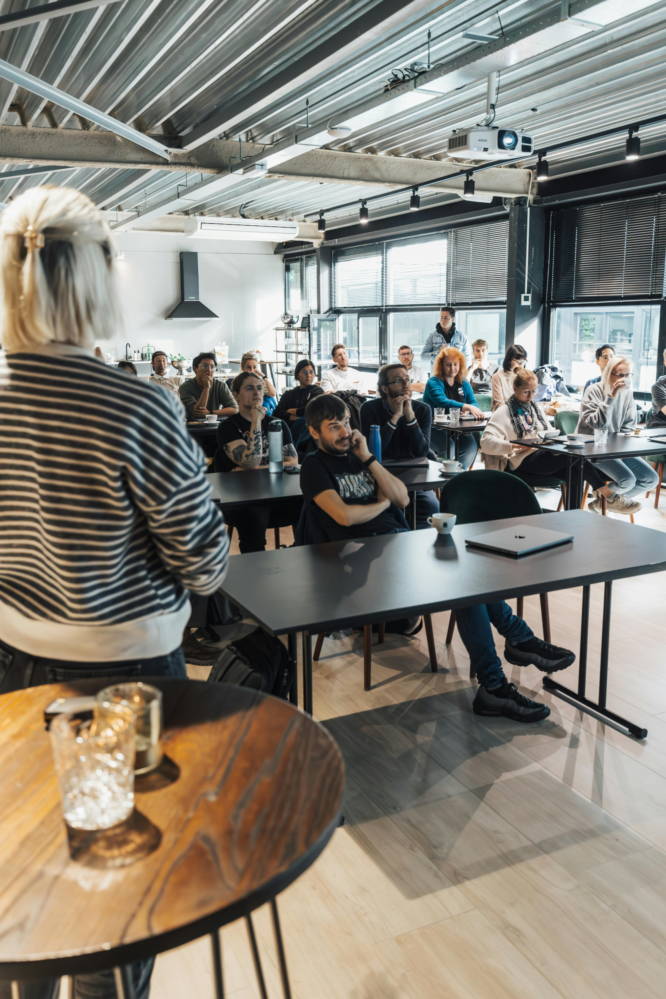

Menguasai keterampilan masa depan di era AI
Navigasi transformasi digital bukan lagi pilihan, melainkan kebutuhan. Temukan bagaimana profesional dan pemimpin masa depan mengintegrasikan kecerdasan buatan dalam strategi kerja mereka.
Explore EntryRuang baca Valnera untuk profesional modern: strategi belajar, data, AI, dan cara membangun kapabilitas yang relevan dengan kebutuhan kerja hari ini.
Navigasi transformasi digital bukan lagi pilihan, melainkan kebutuhan. Temukan bagaimana profesional dan pemimpin masa depan mengintegrasikan kecerdasan buatan dalam strategi kerja mereka.
Explore Entry
Langkah praktis membaca data mentah, menemukan pola, dan mengubahnya menjadi insight yang bisa dieksekusi.
Cara menjaga produktivitas, komunikasi, dan kepemilikan kerja saat tim menghadapi tools dan pola kerja baru.
Fokus pada workflow, kualitas output, dan pengambilan keputusan agar AI tidak berhenti sebagai eksperimen.

Training yang baik tidak hanya ramai di kelas, tetapi meninggalkan struktur kerja yang lebih jelas setelah program selesai.